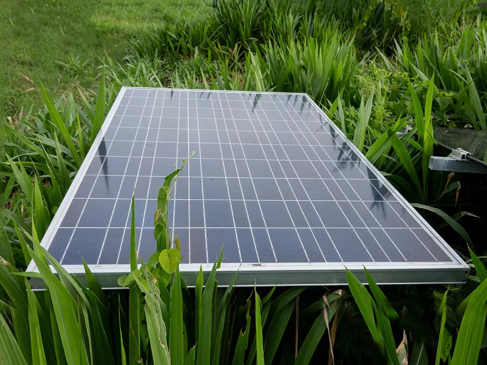

Les Panneuax solaire
I)Historique: la conversion de la lumier en éléctricité appeleé
effet photovoltaique a tté découverte par Antaine Becquerel en 1839 mais il foudra
attendre prés, siecte pour les sientifiques
approfendissent et exlaitant ce phénoménes
de la physique Les panneaux solaires photovoltaïques transforment l'énergie solaire, disponible gratuitement, en électricité. Un onduleur transforme ce courant continu en courant alternatif, pour l'injecter sur le réseau ou le consommer sur place.
Les Panneuax photovoltaique
Les Panneuax photovoltaique Transorme L'energie solaire en énergie éléctrique *Le prix du kilowattheure Effy s'élève à 9 centimes d'euros contre 18 centimes d'euros par kilowattheure consommé sur le réseau public. Ce prix est calculé pour un client Effy vivant à Lyon avec une installation de 6 kilowatt-crête orientée plein sud d’une valeur de 14 250 € TTC et produisant 157 916 kilowattheure pendant 25 ans.
Les 4 grands avantages d'une installation photovoltaïque ☀️
Vous réalisez des économies : l'énergie du soleil est gratuite et infinie. En l'utilisant à la maison, vous pouvez atteindre jusqu'à 40 % d'économies.
Vous valorisez votre logement : les panneaux solaires sont un atout indéniable à la revente de votre maison.
Vous faites un geste pour la planète : l'énergie solaire est disponible gratuitement et durablement. C'est une énergie propre !
Vous vous assurez un petit revenu : en optant pour l'autoconsommation avec revente du surplus, vous gagnez de l'argent.

Comment ça marche ?
Qu'est-ce qu'un panneau solaire ?
Un panneau solaire est un dispositif plat d'environ 1 m2 qui s'installe sur votre toiture. Il est destiné à récupérer l’énergie du rayonnement solaire pour la transformer en chaleur et :
chauffer l'eau sanitaire via des capteurs thermiques
produire de l'électricité grâce à des cellules photovoltaïques
Le panneau solaire peut aussi combiner ces deux fonctions (thermique et photovoltaïque). Il s'agit alors d'un panneau hybride.

----------------------------------------------------------------------------------------------------------
Les panneaux Thermique
 Comment fonctionne un panneau solaire thermique ?
Les panneaux solaires thermiques permettent de produire de l’eau chaude sanitaire et du chauffage. Il ne faut pas les confondre avec des panneaux solaires photovoltaïques qui servent eux à produire de l’électricité.
Un panneau solaire thermique est une surface qui capte les rayons du soleil pour réchauffer un fluide caloporteur placé sous les panneaux. Ce fluide chaud rejoint ensuite le ballon de stockage dans lequel il réchauffe l’eau chaude sanitaire utilisée dans vos robinets, lavabos, douches, etc… Dans le cas d’un système solaire combiné, le ballon de stockage peut être relié à deux circuits d’eau chaude, l’un pour l’eau chaude sanitaire et le second pour le chauffage alimentant des radiateurs à eau ou un plancher.
Comment fonctionne un panneau solaire thermique ?
Les panneaux solaires thermiques permettent de produire de l’eau chaude sanitaire et du chauffage. Il ne faut pas les confondre avec des panneaux solaires photovoltaïques qui servent eux à produire de l’électricité.
Un panneau solaire thermique est une surface qui capte les rayons du soleil pour réchauffer un fluide caloporteur placé sous les panneaux. Ce fluide chaud rejoint ensuite le ballon de stockage dans lequel il réchauffe l’eau chaude sanitaire utilisée dans vos robinets, lavabos, douches, etc… Dans le cas d’un système solaire combiné, le ballon de stockage peut être relié à deux circuits d’eau chaude, l’un pour l’eau chaude sanitaire et le second pour le chauffage alimentant des radiateurs à eau ou un plancher.
Quelles économies réaliser avec des panneaux thermiques ?
L'installation de panneaux solaires thermiques dans votre logement vous permet de faire jusqu'à 40% d'économies sur vos factures. Comment ? En utilisant une énergie renouvelable, gratuite et illimitée !
👉 Pour en profiter pleinement, il est nécessaire que votre toiture soit bien ensoleillée.
Quels sont les différents capteurs ?
Les panneaux solaires thermiques sont des capteurs thermiques. Il en existe plusieurs sortes :
les capteurs plans vitrés : se sont les plus courants dans le secteur résidentiel. Ils se constituent d’une plaque en métal noir qui absorbe le rayonnement solaire et est en contact avec les tubes contenant le fluide caloporteur. Un isolant résistant aux fortes températures est placé sous l'ensemble pour garder la chaleur dans les tubes. Un vitrage en verre trempé recouvre les tubes pour les protéger et crée un effet de serre pour chauffer encore plus le fluide caloporteur ;
les capteurs tubulaires sous vide : ils se composent de plusieurs tubes en verre placés les uns à côté des autres et dans lesquels une plaque métallique noire absorbe l’énergie solaire. Ces tubes sont placés sous vide pour limiter les pertes de chaleur. Ce type de capteurs s’avère vraiment intéressant pour des conditions plus extrêmes. En temps normal, des capteurs plans vitrés peuvent suffire ;
les capteurs plans non vitrés : ils peuvent être utilisés pour le chauffage des piscines. Moins coûteux, ils sont également moins performants et plus sujets à des dégradations puisqu’ils ne sont pas protégés par une vitre ;
les capteurs monoblocs : ils sont munis d’un ballon de stockage placé directement sur le toit. L’avantage est la proximité entre le ballon d’eau et le panneau. En revanche, le ballon est plus sujet aux pertes de chaleur sur le toit puisqu’il est en contact avec l’air extérieur.
👉 Pour éviter le gel du fluide caloporteur dans les tuyaux, il existe des fluides antigel comme l’eau glycolée ou encore des systèmes auto-vidangeables. Au contraire, si la température est trop importante, la vidange évite la surchauffe du fluide qui dégraderait le matériel.